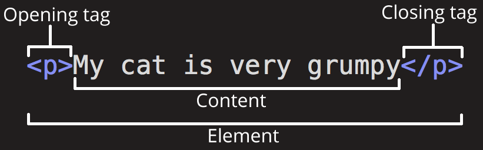
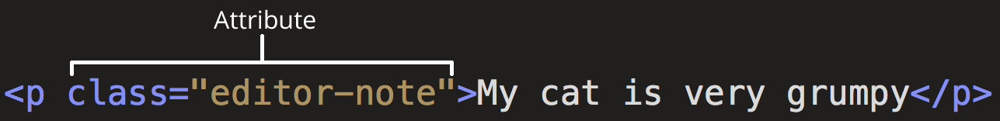

Початок роботи з HTML
- Що таке HTML?
- Структура HTML-елементів
- Атрибути
- Структура HTML документа
- Спеціальні символи HTML (Entity)
- HTML коментарі
У цій статті ми охопимо ази HTML, потрібні для початку роботи. Дамо визначення «елементам», «атрибутам», «тегам» та іншим важливим поняттям, про які ви, можливо, чули, а також про їхню роль у мові. Ми також покажемо, як влаштовані HTML-елементи, типова HTML-сторінка та пояснимо інші важливі аспекти мови. По ходу справи, щоб ви не нудьгували, ми пограємося зі справжньою HTML-сторінкою!
Що таке HTML?
HTML (HyperText Markup Language – мова гіпертекстової розмітки) не є мовою програмування – це мова розмітки, яка використовується для визначення структури веб-сторінок, які відвідують користувачі. Вони можуть мати складну чи просту структуру, все залежить від задуму та бажання веб-розробника. HTML складається з ряду елементів, які ви використовуєте для того, щоб охопити, обернути або розмітити різні частини вмісту, щоб він мав певний вигляд або спрацьовував певним способом. Вбудовані теги можуть перетворити частину вмісту на гіперпосилання, за якою можна перейти на іншу веб-сторінку, виділити курсивом слова і так далі. Наприклад, розглянемо наступний рядок:
My cat is very grumpy
Якщо ми хочемо, щоб рядок відобразився в такому ж вигляді, ми можемо визначити його як "параграф
(paragraph)",
уклавши його в теги елемента "параграф (paragraph)" (
<p>), наприклад:
<p>My cat is very grumpy</p>
Теги HTML нечутливі до регістру, тобто вони можуть бути записані у верхньому або нижньому регістрі.
Наприклад,
тег <title> може бути записаний як <title>,
<TITLE>,
<Title>, <TiTlE>, і т.д., і він буде працювати нормально. Найкращою
практикою, однак, є запис усіх тегів у нижньому регістрі для забезпечення узгодженості, зручності читання та
інших причин.
Структура HTML-елементів
Давайте розглянемо елемент "параграф" трохи докладніше:
Основними частинами елемента є:
- Відкриваючий тег – складається з назви (позначення) елемента (у нашому випадку p), поміщеного всередині кутових дужок. Цей тег є ознакою початку елемента, з цього моменту тег починає впливати на наступний після нього вміст.
- Закриваючий тег – виглядає як і відкриваючий, але містить слеш (/) перед назвою тегу. Він є ознакою кінця елемента. Втрата закриваючих тегів – типова помилка новачків, яка може призвести до невизначених результатів – у кращому випадку все спрацює правильно, в інших сторінка може зовсім не промальовуватися або промальовуватися не як очікувалося.
- Вміст – у нашому випадку вмістом є простий текст.
Елемент – відкриваючий тег, вміст, закриваючий тег.
Вкладені елементи
Ви також можете вкладати елементи всередину інших елементів – це називається вкладеністю. Якщо ми хочемо підкреслити, що наш кіт дуже сердитий, ми можемо укласти слово "very" в елемент , який означає, що це слово вкрай важливо в даному контексті:
<p>My cat is <strong>very</strong> grumpy.</p>Ви повинні переконатися, що елементи вкладені належним чином: у наступному прикладі відкриваємо p елемент першим, потім елемент strong, потім ми закриваємо елемент strong першим, потім p. Нижче наведено приклад неправильного вкладення:
<p>My cat is <strong>very grumpy.</p></strong>Елементи мають відкриватися та закриватися правильно, таким чином, щоб явно перебувати всередині чи зовні один одного. Якщо вони перекриваються так, як у прикладі вище, ваш браузер спробує «додумати» за вас, що ви мали на увазі, і ви отримаєте непередбачуваний результат. Тож не робіть так!
Порожні (void) елементи
Не всі елементи відповідають вищезгаданому шаблону: відкриваючий тег, контент, закриваючий тег. Деякі
елементи
складаються з одного тегу і зазвичай використовуються для вставки чогось у місце документа, де розміщені.
Наприклад, елемент <img> вставляє картинку на сторінку в тому самому місці, де він
розташований:
<img src="https://raw.githubusercontent.com/mdn/beginner-html-site/gh pages/images/firefox-icon.png">Це виведе наступне:
Атрибути
У елементів можуть бути атрибути, які виглядають так:
Атрибути містять додаткову інформацію про елемент, яка не відображатиметься у вмісті. В даному випадку атрибут class дозволяє дати елементу ідентифікаційне ім'я, яке надалі може бути використане для звернення до елемента з метою додати стилеве оформлення.
Атрибут повинен мати:
- Пробіл між атрибутом та ім'ям елемента (або попереднім атрибутом, якщо елемент уже має один або кілька атрибутів).
- Ім'я атрибута та наступний за ним знак рівності.
- Значення атрибута у подвійних "" або одинарних '' лапках.
Наприклад атрибути тегу <a>
hrefУ значенні цього атрибута прописується веб-адреса, на яку має вказувати посилання, куди браузер переходить,
під
час кликання по ній. Наприклад, href="https://www.mozilla.org/".
title
Атрибут title містить текст, що надає інформацію щодо елемента. Ця інформація може, але не
обов'язково, показуватися користувачеві у вигляді підказки. Наприклад, title="The Mozilla homepage" –
з'явиться
у вигляді підказки, коли ви наведете курсор на посилання.
target
Атрибут target визначає контекст перегляду, який використовуватиметься для відображення посилання.
Наприклад,
target="_blank" відобразить посилання на новій вкладці. Якщо потрібно відобразити посилання на
поточній вкладці, просто опустіть цей атрибут.
Бульові атрибути
Іноді ви бачитимете атрибути, написані без значення — це цілком припустимо. Такі атрибути називаються булеві, і вони можуть мати тільки одне значення, яке збігається з його ім'ям. Як приклад візьмемо атрибут disabled, який можна призначити для формування елементів введення, якщо ви хочете, щоб вони були відключені (неактивні), тому користувач не може вводити будь-які дані в них.
<input type="text" disabled="disabled">Для стислості цілком допустимо записувати їх в так(для розуміння наведено не деактивований елемент input, щоб дати більше розуміння того, що відбувається): Для стислості цілком допустимо записувати їх в так(для розуміння наведено не деактивований елемент input, щоб дати більше розуміння того, що відбувається):
<!-- using the disabled attribute prevents the end user from entering text into the input box --><input type="text" disabled /><!-- text input is allowed, as it doesn't contain the disabled attribute --> <input type="text" />Опускання лапок навколо значень атрибутів
Якщо ви подивитесь на код багатьох інших сайтів, ви можете натрапити на низку дивних стилів розмітки,
зокрема
значення атрибутів без лапок. Це дозволено за певних обставин, але також може порушити вашу розмітку за
інших
обставин. Наприклад, якщо ми переглянемо наш попередній приклад посилання, ми могли б написати базову версію
лише з атрибутом href, як це:
<a href=https://www.mozilla.org/>favorite website</a> Копіювати в буфер обміну
Однак,
як тільки ми додаємо атрибут title таким чином, виникають проблеми:
<a href=https://www.mozilla.org/ title=The Mozilla homepage>favorite website</a>
Браузер неправильно інтерпретує розмітку, сприймаючи атрибут title за три атрибути: атрибут
title
зі значенням The та два логічні атрибути, Mozilla та homepage. Це
призведе до помилок або неочікуваної поведінки.
<a href=https://www.mozilla.org/ title=The Mozilla homepage>favorite website</a>